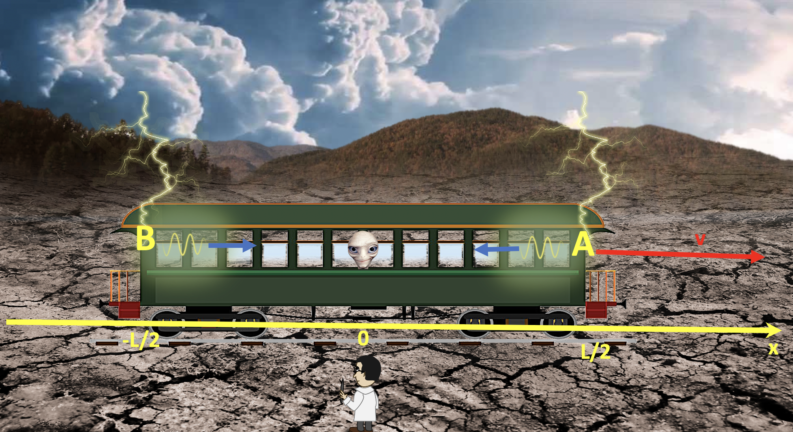

Forrige side🙂 🙁Et tankeeksperimentPADLET

Et tog ruller bortover mot høyre med fart v. Midt inne i toget har vi passasjer P med to store øyne. På bakken står professor O. Vi har en stor x-akse på bakken der professor O står i origo. Lengden av toget er L. På dette øyeblikksbildet er midten av toget, og dermed også passasjer P, i origo på x-aksen. Akkurat i dette øyeblikket slår to lyn ned samtidig, et foran i toget (event A) og et bak (event B). Lysstrålene fra de to lynnedslagene begynner å bre seg utover mot passasjer P (markert med lysbølger og blå piler)